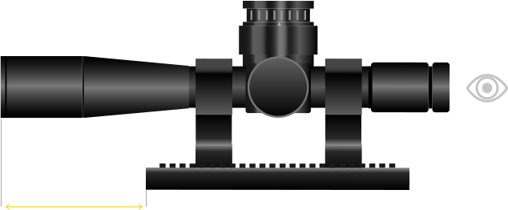

Калькулятор смещения наклона
Калькулятор
Калькулятор смещения наклона крепления прицела
Воспользуйтесь этим простым калькулятором, чтобы вычислить потерю высоты из-за наклона крепления прицела. Например, предположим, что ваше крепление прицела обеспечивает зазор высотой 10 мм между нижней частью прицела и верхней частью ствола. Если крепление вашего прицела имеет наклон 20 МОА, как это повлияет на ваш зазор по высоте? Узнайте с помощью этого калькулятора.

Смещение: загар (косяк MOA x 1/60) x (длина между передней частью прицела и передней частью планки) = потеря высоты 0,89 мм (0,03 дюйма)
Примечание. Это рекомендация.
Примечание. Это рекомендация.